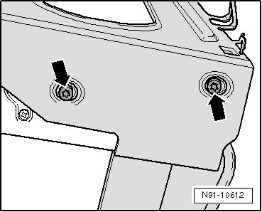

CD Changer in Bracket
CD Changer in Bracket
Removing
- On removed CD changer, remove bolts - arrows - on both sides of bracket.

- Remove CD changer from bracket.
Install in reverse order of removal.
• Always use suitable bolts to secure CD changer in bracket. If longer bolts are uses, the inside of the CD changer could be damaged.